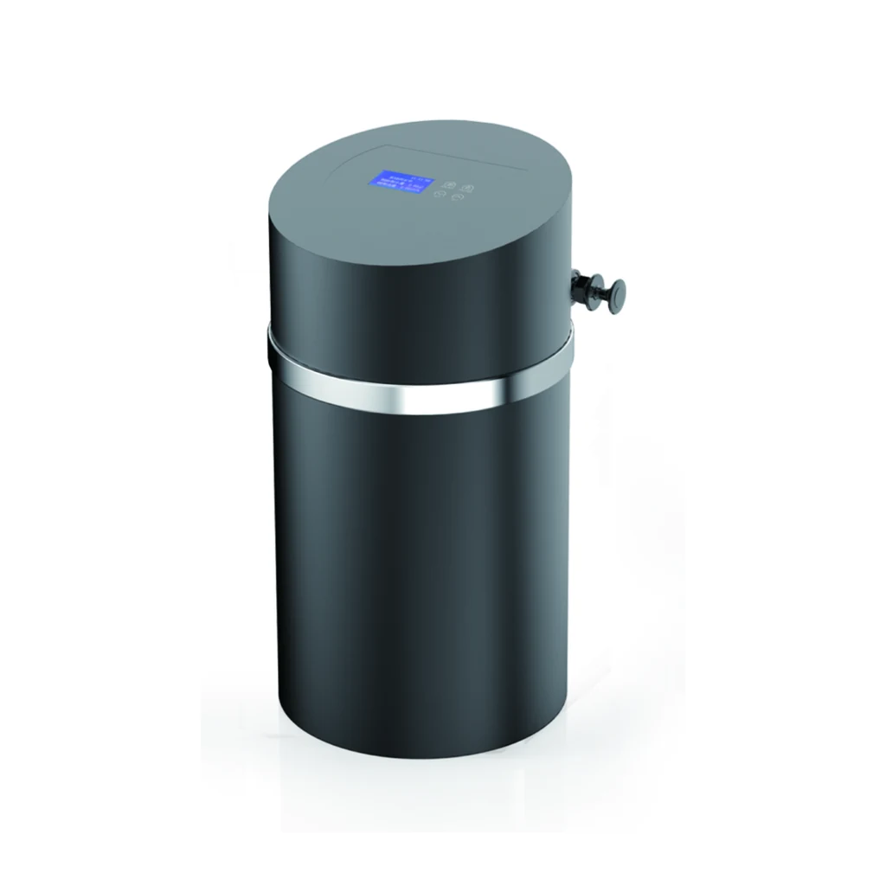
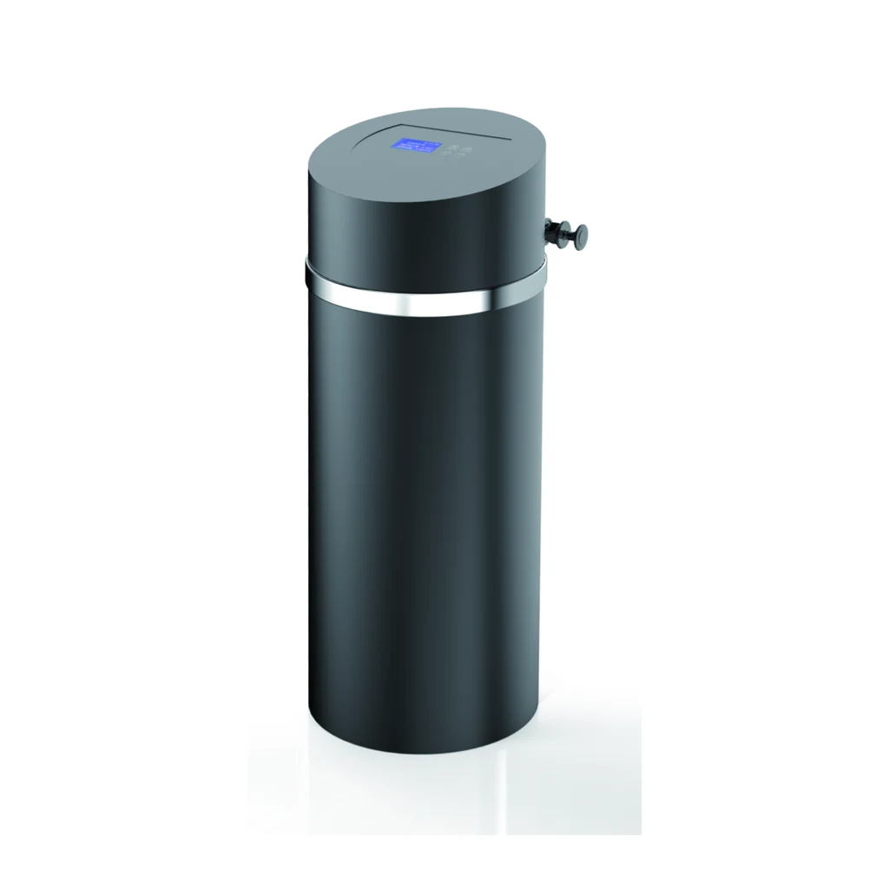
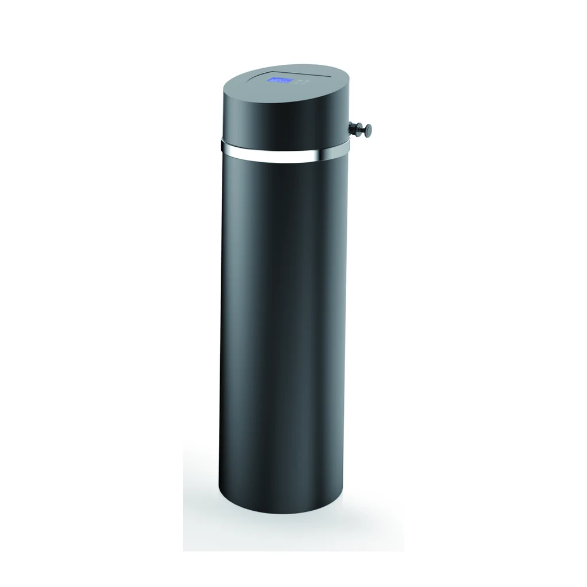

Automatic Water Filter
YC-J1000A
YC-J1000A has the source-listed Product Size(with By-pass) value 299X299X567mm.
Request a Quote for YC-J1000ACompare the cylindrical YC-JA cabinet family across three source-listed flow, activated-carbon and FRP tank configurations.
Each image is a deterministic crop from the approved product-only PDF panel; no product geometry, color, controller or accessory was redrawn.

YC-J1000A has the source-listed Product Size(with By-pass) value 299X299X567mm.
Request a Quote for YC-J1000A
YC-J2000A has the source-listed Product Size(with By-pass) value 299X299X781mm.
Request a Quote for YC-J2000A
YC-J3000A has the source-listed Product Size(with By-pass) value 299X299X1070mm.
Request a Quote for YC-J3000AThe YC-JA Automatic Water Filter Series comparison uses the owner-approved public YC identifiers. Every technical value and unit below preserves the reviewed source notation.
| Specification | YC-J1000A | YC-J2000A | YC-J3000A |
|---|---|---|---|
| Valve Type | Automatic filter valve | Automatic filter valve | Automatic filter valve |
| Working Pressure | 0.15-0.5MPa | 0.15-0.5MPa | 0.15-0.5MPa |
| Working Temperature | 5~48℃ | 5~48℃ | 5~48℃ |
| Power Supply | 220V/110 50Hz | 220V/110 50Hz | 220V/110 50Hz |
| Inlet & Outlet size | 3/4" | 3/4" | 3/4" |
| Flow Rate | ≤1.0T/H | ≤2.0T/H | ≤3.0T/H |
| Activated Carbon Volume | 12L | 18L | 25L |
| FRP Tank Size | 1015 | 1024 | 1035 |
| Product Size(with By-pass) | 299X299X567mm | 299X299X781mm | 299X299X1070mm |
The reviewed YC-JA Automatic Water Filter Series table identifies an automatic filter valve and activated-carbon volume. In a typical filter configuration, the valve controls service and cleaning cycles around the FRP tank; media grade and verified treatment performance require separate confirmation.
YC-J2000A lists ≤2.0T/H, 18L Activated Carbon Volume, FRP Tank Size 1024 and Product Size(with By-pass) 299X299X781mm.
YC-J1000A lists ≤1.0T/H and 12L Activated Carbon Volume; YC-J3000A lists ≤3.0T/H and 25L Activated Carbon Volume.
No. Each YC-JA flow value is preserved as a source-listed selection row and must be confirmed against feed-water conditions and system design.
Provide the exact YC-JA model, feed-water analysis, electrical requirement, connection details, intended configuration and project quantity.